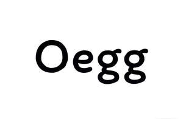

Trade Mark Journal No.2025/051 19 December 2025
UK00004307407 9 December 2025 (30,35,43)

- Class 30
- Confectionery; Buns; Cocoa; Coffee; Cakes; Chocolate; Sandwiches; Pastries; Bread rolls; Coffee-based beverages; Cocoa-based beverages; High-protein cereal bars; Cereal based energy bars; Cereal preparations consisting of bran; Biscuits; Doughnuts; Tea; Bread; Herbal teas, other than for medicinal use; Sweetmeats.
- Class 35
- Advertising; Import-export agency services; Organization of exhibitions for commercial or advertising purposes; Sales promotion for others; Presentation of goods on communication media, for retail purposes; Providing commercial information and advice for consumers in the choice of products and services; Retail services relating to bakery products; Online ordering services in the field of restaurant take-out and delivery; Promotion of goods through influencers; Retail services in relation to fabrics; Retail services in relation to foodstuffs; Retail services in relation to coffee; Advisory services relating to publicity for franchisees; Wholesale services in relation to preparations for making beverages; Wholesale services in relation to dietary supplements; Organisation and holding of fairs for commercial or advertising purposes; Provision of an on-line marketplace for buyers and sellers of goods and services; On-line ordering services in the field of restaurant take-out and delivery; Business advice and consultancy relating to franchising; Retail services relating to food.
- Class 43
- Food and drink catering; Café services; Hotel accommodation services; Restaurant services; Self-service restaurant services; Take-away restaurant services; Advice concerning cooking recipes; Agency services for reservation of restaurants; Fast-food restaurant services; Mobile catering services; Ice cream parlour services; Serving food and drinks; Take-away food and drink services; Services for providing food and drink; Reservation and booking services for restaurants and meals; Coffee shop services; Juice bar services; Tea room services; Consultancy services relating to baking techniques; Consultancy services in the field of food and drink catering.
Wu Xiang
Representative: SHENZHEN ZHONG GANGXING SHUNLI INTELLECTUAL PROPERTY AGENCY CO., LTD